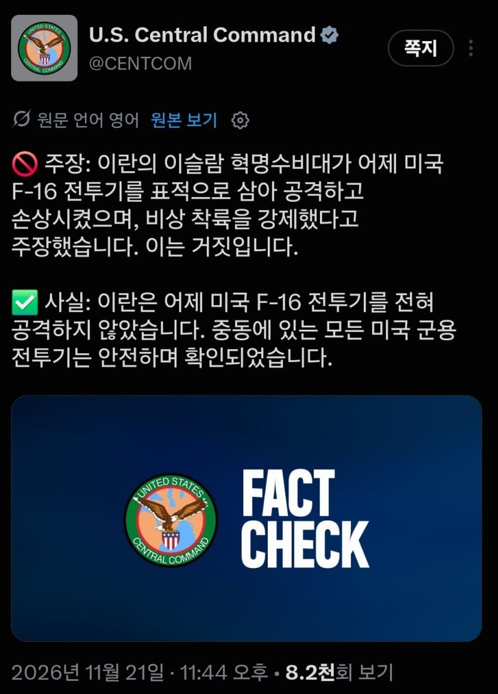
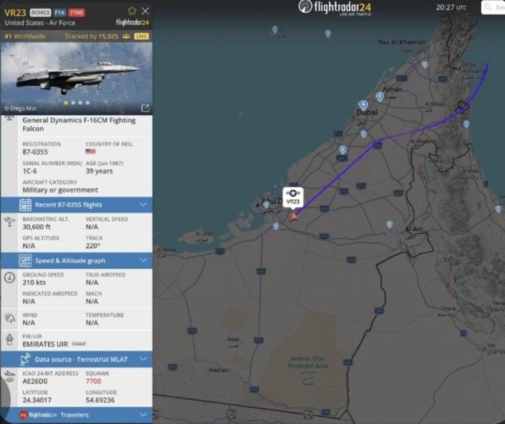
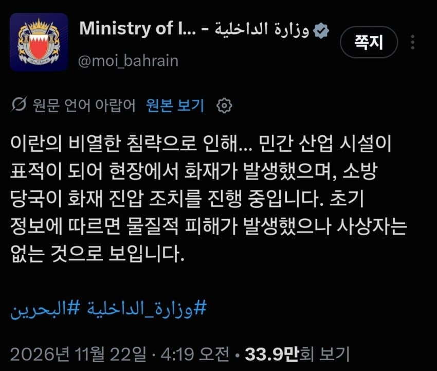
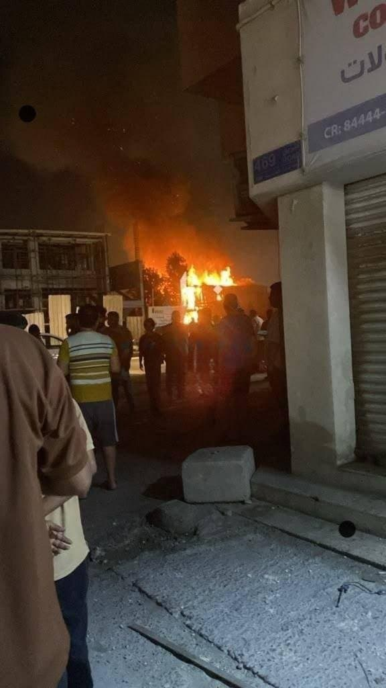
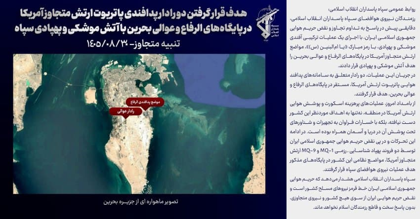
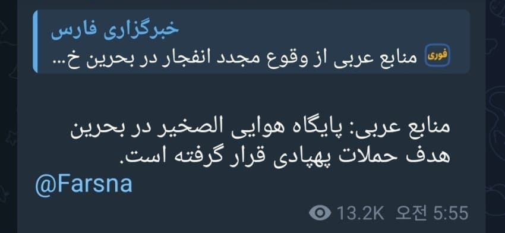
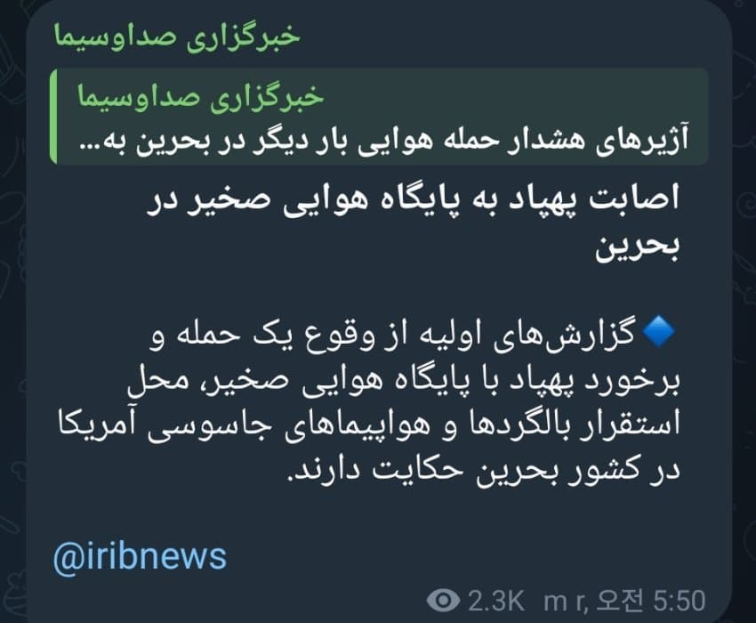

1. 이란의 미군 F16 공격주장 (한국시간 기준 11/21 22시경 발표)
미국 F-16 전투기 손상 및 임무 취소: 국내 방공군 시스템의 공격
군 대변인: 지난 금요일 저녁, 남부 지역에 배치된 국내 방공군 시스템이 국가 통합 방공 시스템의 통제 하에 미국 F-16 전투기를 페르시아만 상공에서 탐지하고 식별하는 데 성공했습니다.
이 작전 중, 방공 시스템은 미국 F-16 전투기를 추적한 후, 해당 전투기를 향해 미사일을 발사했습니다. 미사일이 전투기 근처에서 폭발하면서, 미국 전투기는 손상을 입었고, 조종사는 임무를 취소하고 가장 가까운 지역 공항 중 하나에 비상 착륙해야 했습니다.
*타스님뉴스(IRGC소유) 공식 텔레그램 뉴스채널
미국 F-16 전투기 손상 및 임무 취소: 국내 방공군 시스템의 공격
군 대변인: 지난 금요일 저녁, 남부 지역에 배치된 국내 방공군 시스템이 국가 통합 방공 시스템의 통제 하에 미국 F-16 전투기를 페르시아만 상공에서 탐지하고 식별하는 데 성공했습니다.
이 작전 중, 방공 시스템은 미국 F-16 전투기를 추적한 후, 해당 전투기를 향해 미사일을 발사했습니다. 미사일이 전투기 근처에서 폭발하면서, 미국 전투기는 손상을 입었고, 조종사는 임무를 취소하고 가장 가까운 지역 공항 중 하나에 비상 착륙해야 했습니다.
*타스님뉴스(IRGC소유) 공식 텔레그램 뉴스채널

하지만 센트콤(미국중부사령부)는 이를 부정,
이란의 F-16 공격 사건 자체가 없었다고 주장함
https://x.com/CENTCOM/status/2124152057787482170?a=pgXpvAvAve9rIkWFhi8&s=19

다만 GPS로는 전날 한국시간 기준 05시쯤
실제로 F-16이 비상코드 7700을 발신하고
UAE에 착륙한 정황이 포착되긴 했음
2. 이란의 바레인 공습
2-1. 바레인 1차 공습
한국시간 기준 오늘자 03:09,
바레인서 공습경보 발령 (경보해제 05:16)
이번에는 바레인내무부도 공식 트윗을 통해
이란의 공격을 비판함

민간 산업시설이 공격당했다고 주장하며
비열한 침략이라 표현
아래는 타스님에 올라온 바레인 현지제보 사진

두 시간뒤 IRGC의 작전 수행 발표

미국 침략군의 패트리어트 방공 시스템 레이더 2대를 바레인 알라파와 아와왈 지역의 기지에 이란 혁명 수비대의 미사일 및 드론 공격으로 타격
이란 혁명 수비대 대변인:
이란 혁명 수비대 공군, 잠시 전, 지속적인 미국의 침략과 이란 공역 침해에 대한 대응으로, "야 움므 알-바닌 (평화가 그 위에 있기를)"이라는 이름의 복합적인 공격 작전을 수행하여, 바레인 알라파와 아와왈 지역의 기지에 배치된 미국 침략군의 시설을 미사일과 드론으로 공격했습니다.
이번 작전에서, 바레인 알라파와 아와왈 지역의 기지에 배치된 미국 군의 패트리어트 방공 시스템에 속한 레이더 2대가 공격 대상이 되었습니다.
오늘 새벽부터, 미국 군의 고가의 호위 및 공중 방어 작전은 해당 국가의 목표를 달성하지 못했을 뿐만 아니라, 해상 및 공중에서 보호받던 장비와 함정에 막대한 피해를 입혔습니다. 이러한 움직임의 연장선상에서, 미국 침략군의 MQ-1 및 MQ-9 정찰-공격 드론 2대가 이란 공역을 침범한 후, 해당 국가의 군사 시설이 이란 혁명 수비대 공군의 작전 대상이 되었습니다.
이란 혁명 수비대는 경고합니다. 이란 공역은 이 나라의 무장 세력의 금지선이며, 어떤 국가나 침략 세력의 이란 공역 침범도 이슬람 전사들의 강력하고 단호한 대응 없이 용납되지 않을 것입니다.
*타스님뉴스(IRGC 소유) 공식 텔레그램 뉴스채널
이란은 바레인의 미군기지들을 공격했다고 밝힘
(민간시설에 대한 언급은 없음)
2-2. 바레인 2차 공습
한국시간기준 05:33,
첫 공습경보 해제 후 약 16분만에 2차 공습경보 발령
2차 공격에 대한 이란측의 공식발표는 없었지만
언론들에 따르면 이번에도 미군기지에 대한 공습이였던걸로 추정됨

아랍 소식통: 바레인에 있는 알사키르 공군 기지가 드론 공격을 받았습니다.
*파르스통신(IRGC 연계) 공식 텔레그램 뉴스채널

바레인, 사키르 공군 기지에 드론 공격
초기 보고에 따르면, 드론이 바레인에 있는 미국 헬리콥터 및 정찰기 기지인 사키르 공군 기지에 공격을 가했습니다.
*IRIB(이란국영) 공식 텔레그램 뉴스채널
공습경보 해제는 06:21
댓글
수집 당시 댓글 132개
· ㅇㅇㅇ · 11.22 21:44:56
· ㅇㅇ · 11.22 22:22:23
· ㅇㅇ · 11.22 23:41:20
· ㅇㅇ · 11.23 03:30:48
· ㅇㅇ · 11.23 03:54:00
· ㅇㅇ · 11.23 09:44:06
· ㅇㅇ · 11.23 09:45:07
· ㅇㅇ · 11.23 09:48:59
· ㅇㅇ · 11.23 09:53:16
· ㅇㅇ · 11.23 10:34:32
· ㅇㅇ · 11.23 11:56:47
삭제됨 · 11.22 20:59:41
· ㅇㅇ · 11.23 00:13:36
DOOM · 11.22 21:03:56
· DOOM · 11.22 21:04:20
ㅇㅇ · 11.22 21:04:47
ㅇㅇ · 11.22 21:04:58
히이잉 · 11.22 21:05:17
삭제됨 · 11.22 21:06:17
· ㅇㅇ · 11.22 21:29:06
· ㅇㅇ · 11.22 21:32:34
· ㅇㅇㅇ · 11.22 21:45:52
· ㅇㅇ · 11.22 22:57:16
ㅇㅇ · 11.22 21:07:09
Doll · 11.22 21:08:51
ㅇㅇ · 11.22 21:08:52
ㅇㅇ · 11.22 21:10:42
ㅇㅇ · 11.22 21:12:04
· ㅇㅇ · 11.22 21:19:46
· ㅇㅇ · 11.22 22:01:40
· ㅇㅇ · 11.22 22:02:33
· ㅇㅇ · 11.23 15:19:58
환계 · 11.22 21:14:36
ㅇㅇ · 11.22 21:17:12
ㅇㅇ · 11.22 21:17:34
ㅇㅇ · 11.22 21:21:51
ㅇㅇ · 11.22 21:23:40
ㅇㅇ · 11.22 21:24:17
ㅇㅇ · 11.22 21:24:25
· 교정황제 · 11.22 21:33:16
· ㅇㅇ · 11.22 21:33:25
· ㅇㅇ · 11.23 00:13:45
ㅇㅇ · 11.22 21:27:01
ㅇㅇ · 11.22 21:27:05
ㅇㅇ · 11.22 21:31:07
노럼프
운지
ㅇㅇ · 11.22 21:34:20
돌아온애우 · 11.22 21:35:04
· 돌아온애우 · 11.22 21:35:38
ㅇㅇ · 11.22 21:35:15
ㅇㅇ · 11.22 21:35:17
ㅇㅇ · 11.22 21:35:59
ㅇㅇ · 11.22 21:40:17
공정성장 · 11.22 21:48:50
ㅇㅇ · 11.22 21:52:43
ㅇㅇ · 11.22 21:53:30
ㅇㅇ · 11.22 22:13:57
· 요약 · 11.22 22:18:32
요약 · 11.22 22:14:22
· 요약 · 11.22 22:14:39
· 요약 · 11.22 22:14:52
· 요약 · 11.22 22:15:05
· 요약 · 11.22 22:15:17
· 요약 · 11.22 22:15:34
ㅇㅇ · 11.22 22:22:17
ㅇㅇ · 11.22 22:30:11
· ㅇㅇ · 11.22 22:44:56
· ㅇㅇ · 11.22 22:52:17
ㅇㅇ · 11.22 22:39:48
· ㅇㅇ · 11.23 00:14:25
· ㅇㅇ · 11.23 09:10:24
ㅇㅇ · 11.22 22:41:03
히이잉 · 11.22 22:43:17
ㅇㅇ · 11.22 22:51:57
ㅇㅇ · 11.22 23:25:48
ㅇㅇ · 11.22 23:35:43
kawa · 11.22 23:37:56
ㅇㅇ · 11.22 23:39:08
ㅇㅇ · 11.23 00:15:04
· ㅇㅇ · 11.23 15:24:10
ㅇㅇ · 11.23 00:31:39
ㅇㅇ · 11.23 00:45:35
ㅇㅇ · 11.23 01:37:54
ㅇㅇ · 11.23 01:56:06
ㅇㅇ · 11.23 02:09:45
ㅇㅇ · 11.23 02:09:51
ㅇㅇ · 11.23 02:20:50
· ㅇㅇ · 11.23 15:10:41
ㅇㅇ · 11.23 03:24:40
ㅇㅇ · 11.23 07:26:33
ㅇㅇ · 11.23 07:41:12
· ㅇㅇ · 11.23 15:08:14
· ㅇㅇ · 11.23 15:52:55
ㅇㅇ · 11.23 08:00:47
ㅇㅇ · 11.23 09:23:12
ㅇㅇ · 11.23 09:55:26
ㅇㅇ · 11.23 10:04:05
ㅇㅇ · 11.23 10:17:48
ㅇㅇ · 11.23 11:04:50
ㅇㅇ · 11.23 15:06:59
ㅇㅇ · 11.23 15:55:08
털이조아 · 11.22 12:35:57
· Zui · 11.22 12:48:33
· ㅇㅇ · 11.22 22:29:05
· ㅇㅇ · 11.22 22:29:45
정보분석가 · 11.22 15:39:18
· Zui · 11.22 15:40:22
楚覇王 項羽 · 11.22 20:55:41
· 암타황제강시현 · 11.22 20:57:15
· 楚覇王 項羽 · 11.22 20:57:47
· 꼬막이 · 11.22 21:02:26
· 楚覇王 項羽 · 11.22 21:02:51
봇치쟝 · 11.22 20:55:49
ㅇㅇ · 11.22 20:56:26
· ㅇㅇ · 11.22 20:56:33
· ㅇㅇ · 11.22 20:57:17
· ㅇㅇ · 11.22 21:50:55
ㅇㅇ · 11.22 20:57:03
암타황제강시현 · 11.22 20:57:04
· 이모티콘수집 · 11.22 20:57:59
· ㅇㅇ · 11.22 21:14:21
· 이모티콘수집 · 11.22 21:15:38
이러다5넴다죽어 · 11.22 20:57:20
이모티콘수집 · 11.22 20:57:47
· 암타황제강시현 · 11.22 20:59:53
ㅇㅇ · 11.22 20:58:16
· ㅇㅇ · 11.22 21:01:06
· ㅇㅇ · 11.22 21:02:25
· ㅇㅇ · 11.22 21:26:13
· ㅇㅇ · 11.22 21:33:58
· ㅇㅇ · 11.22 21:35:49
· ㅇㅇ · 11.22 21:37:58
· ㅇㅇ · 11.22 21:38:48